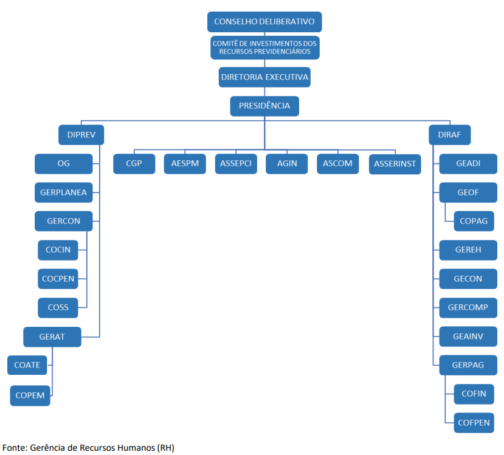

Setores e Suas Atribuições:
I – Formular diretrizes para execução dos objetivos do SERGIPEPREVIDÊNCIA;
II – Discutir e resolver sobre:
a) assuntos de interesse do SERGIPEPREVIDÊNCIA, que lhe sejam apresentados;
b) matérias inerentes ao exercício das atividades e ao cumprimento das finalidades e objetivos do SERGIPEPREVIDÊNCIA;
c) dúvidas decorrentes da interpretação desta Lei, do Regimento Interno do próprio Conselho Deliberativo, ou do Regulamento Geral do SERGIPEPREVIDÊNCIA;
d) procedimentos administrativos e financeiros do SERGIPEPREVIDÊNCIA para implantação de sua organização e para fiel cumprimento da legislação aplicável aos bens, pessoal e outros recursos da autarquia.
III – Propor:
a) a alteração da estrutura básica e das competências dos Órgãos do SERGIPEPREVIDÊNCIA previstas em Lei;
b) a aprovação, por Lei, da criação de cargos de provimento efetivo, e de provimento em comissão, e de funções de confiança do SERGIPEPREVIDÊNCIA;
c) ao Governador do Estado, a obtenção de autorização legal para alienação ou gravame de bens imóveis;
d) a aprovação de medida regular para realização de operações de créditos;
e) a abertura de créditos especiais;
f) a aprovação, pelo Conselho Estadual de Previdência Social – CEPS:
1 – das diretrizes e regras relativas à aplicação dos recursos econômico-financeiros do RPPS/SE, à política de benefícios, e à adequação entre os planos de custeio e de benefícios;
2 – dos planos e programas de benefícios e custeio do RPPS/SE;
3 – de outras medidas regulares que, de acordo com a legislação pertinente, devam ser submetidas ao CEPS, ou forem da competência do mesmo Conselho Estadual.
IV – Aprovar:
a) o Regulamento Geral do SERGIPEPREVIDÊNCIA, e suas alterações, submetendo à homologação do Governador do Estado;
b) o Regimento Interno do próprio Conselho;
c) o Plano Anual de Trabalho do SERGIPEPREVIDÊNCIA;
d) os relatórios, balancetes, balanços, demonstrativos financeiros e prestações de contra das atividades do SERGIPEPREVIDÊNCIA, e, se for o caso, da própria Presidência da
autarquia;
e) a proposta orçamentária anual do SERGIPEPREVIDÊNCIA e respectivas modificações ou alterações;
f) a prestação de contas de convênios firmados com entidades não-governamentais;
g) o montante dos recursos financeiros que o SERGIPEPREVIDÊNCIA pode destinar a programas assistenciais de seus servidores;
h) as instruções normativas para execução de procedimentos administrativos e/ou financeiros.
V – Autorizar:
a) a alienação de bens móveis; Revisão 26/10/2022
b) a aquisição de bens imóveis, exceto quando se tratar de objeto de desapropriação;
c) a celebração de convênios com entidades não governamentais.
VI – Deliberar:
a) sobre os planos, programas e orçamentos do SERGIPEPREVIDÊNCIA, e sobre o
andamento de sua execução;
b) sobre a organização interna, normas de gestão, procedimentos e instruções administrativas;
c) sobre contrato de execução de obras, fornecimento de materiais e prestação de serviços, quando submetidos à sua apreciação pela Presidência da autarquia;
d) sobre convênios, contratos e outros ajustes;
e) sobre os contratos de Locação e de Permissão ou Concessão Onerosa de Direito Real de uso de Bens Imóveis;
f) sobre outras medidas ou assuntos que regularmente forem submetidos à sua apreciação e deliberação.
I- Auxiliar no processo decisório quanto à execução da política de investimentos;
II- Acompanhar as avaliações das rentabilidades, cujas decisões serão registradas em ata;
III- Acompanhar a alocação dos recursos de acordo com a política de investimentos e resolução do
conselho monetário nacional – CMN;
IV-Realizar reuniões, pelo menos bimestralmente, podendo ocorrer concomitantemente com a
Reunião do Conselho Estadual de Previdência Socia;
V- Solicitar informações sobre os investimentos;
VI-Fornecer subsídios para a elaboração ou alteração de política de investimentos;
VII-Propor aplicações e resgates, observados os limites legais de cada investimento;
VII-Acompanhar a execução da política de investimentos.
- Presidência;
- Diprev;
- Diraf
DIRETOR PRESIDENTE
NOME: José Roberto de Lima Andrade
NOMEAÇÃO: 23/09/2016
TELEFONE: (79) 3198-0827
E-MAIL: gabinete@sergipeprevidencia.se.gov.br
I – Dirigir, em grau hierárquico superior, as atividades da autarquia, superintendendo a sua administração e os seus negócios, interagindo inclusive com outras entidades congêneres;
II – Cumprir e fazer cumprir a legislação que estiver em vigor, as Resoluções e os Atos do Conselho Estadual de Previdência Social – CEPS, e do Conselho Deliberativo da Autarquia, visando a execução da política de previdência social do serviço público;
III – Operacionalizar o Regime Próprio de Previdência Social do Estado de Sergipe RPPS/SE, nos termos da Lei Complementar nº 113, de 1º de novembro de 2005;
IV – Representar o SERGIPEPREVIDÊNCIA, ativa e passivamente, em juízo ou fora dele, podendo designar procuradores e prepostos;
V – Organizar os serviços do SERGIPEPREVIDÊNCIA, expedindo os atos administrativos que para tanto se façam necessários;
VI – Propor ao Conselho Deliberativo a criação ou modificação de Unidades que integram aestrutura organizacional do SERGIPEPREVIDÊNCIA, bem como as alterações e transformações de cargos em comissão e funções de confiança, desde que não resultem em aumento de despesas;
VII – Proferir decisões em processos administrativos de sua competência, bem como praticar os atos relativos à administração dos servidores do SERGIPEPREVIDÊNCIA;
VIII – Julgar, em primeira instância, os recursos interpostos pelos servidores do SERGIPEPREVIDÊNCIA, encaminhando ao Conselho Deliberativo, conforme o caso, se julgar
necessário;
IX – Autorizar a abertura de créditos suplementares, até o limite estabelecido em lei, submetendo à apreciação do Conselho Deliberativo pedido de crédito acima dos limites legalmente previstos;
X – Aplicar, conjuntamente com o Diretor Administrativo e Financeiro, os recursos do SERGIPEPREVIDÊNCIA, supervisionando permanentemente as aplicações dos investimentos efetuados com ativos do Fundo de Aposentadoria e Pensões dos contribuintes da Autarquia, zelando pela garantia do patrimônio geral do mesmo;
XI – Contratar, quando necessário, ouvido a Diretoria Executiva, gestores externos ou instituições financeiras idôneas, para o desenvolvimento e aplicação dos ativos do Fundo de Aposentadoria e Pensões do SERGIPEPREVIDÊNCIA;
XII – Conceder e, quando necessário, alterar ou cancelar benefícios previdenciários, após pronunciamento do Diretor de Previdência e parecer fundamentado da Procuradoria Jurídica e decisão final da Diretoria Executiva;
XIII – Praticar, conjuntamente com o Diretor Administrativo e Financeiro, os atos relativos à gestão de recursos humanos do SERGIPEPREVIDÊNCIA, bem como daqueles que se encontrem a sua disposição;
XIV – Encaminhar ao Conselho Deliberativo, para apreciação, o Plano de Aplicação dos Investimentos do SERGIPEPREVIDÊNCIA;
XV – Avaliar e propor medidas para preservação do equilíbrio financeiro e atuarial do Sistema de Previdência Social dos Servidores do Estado de Sergipe, submetendo-o a aprovação do Conselho Estadual de Previdência Social – CEPS;
XVI – Promover, na forma legal, a aquisição e, se necessário, autorização legislativa, por intermédio do Governo do Estado, para gravame ou alienação de bens imóveis, observadas as normas constitucionais e a legislação estadual específica;
XVII – Submeter à apreciação do Conselho Deliberativo, justificativa expondo sobre a necessidade de aquisição de veículos, equipamentos, linhas telefônicas, bens móveis e materiais permanentes em geral;
XVIII – Promover a alienação, permuta e comodato de bens móveis do SERGIPEPREVIDÊNCIA, após autorização do Conselho Deliberativo, observada a legislação pertinente;
XIX – Determinar a realização de licitações e decidir quanto à aprovação das conclusões dos procedimentos licitatórios;
XX – Firmar contratos, celebrar convênios, acordos ou ajustes, após manifestação da Diretoria Executiva e, se cabível, do Conselho Deliberativo;
XXI – Prover as funções de confiança e os cargos de provimento em comissão, e, autorizado pelo Conselho Deliberativo, admitir e demitir ou despedir os servidores do SERGIPEPREVIDÊNCIA, na forma da legislação e das normas regulamentares;
XXII – Designar substitutos eventuais dos demais Diretores Executivos do SERGIPEPREVIDÊNCIA; XXIII – Promover a elaboração da proposta do Plano Plurianual e de
Orçamento do SERGIPEPREVIDÊNCIA, bem assim instituir os mecanismos necessários para a sua consequente e perfeita execução orçamentária;
XXIV – Delegar atribuições de sua competência, respeitadas as restrições ou limites legais;
XXV – Exercer outras atividades inerentes à Presidência, bem como as que forem regularmente conferidas ou determinadas.
Chefe do Gabinete da Presidência – CGP
Edla Ketlyn Bruno Alves
E-mail: gabinete@sergipeprevidencia.se.gov.br
Telefone: 3198-0800
I- Assessorar o Presidente para contatos com os demais poderes, sindicatos, autoridades municipais,
estaduais e federais;
II- Recepcionar e orientar o ingresso de visitantes ou outras pessoas que se dirijam ao Gabinete;
III- Organizar e acompanhar a agenda de audiências, reuniões e viagens do Presidente;
IV- Receber, filtrar, despachar os documentos protocolados destinados ao Presidente;
V- Elaborar, digitar e editorar e enviar os documentos oficiais do Presidente;
VI- Examinar previamente todos os documentos enviados para a assinatura do Presidente, em consulta
com a Assessoria Jurídica, quando necessário;
VII- Notificar interessados/segurados(a) sobre resultados dos processos administrativos;
VIII- Receber, delegar, acompanhar prazos, e/ou responder demandas judiciais dos Tribunais de Justiça
e do Trabalho, direcionadas ao Instituto;
IX- Receber, acompanhar prazo e protocolar respostas no Portal Sagres das Diligências Ofícios
expedidas pelo Tribunal de Contas;
X- Planejar, coordenar e supervisionar as publicações oficiais do Instituto;
XI- Organizar e manter sob sua responsabilidade os originais de Lei, Decretos e Portarias e atos
normativos do Executivo Estadual;
XII- Transmitir aos demais Gerentes/Assessores as principais as ordens e orientações do Presidente,
zelando pelo seu cumprimento;
XIII- Executar outros serviços técnicos que forem determinados pelo Presidente;
I- Exercer o assessoramento das atividades relativas à previdência do Sistema de Proteção Social dos
Militares, a cargo do SERGIPEPREVIDÊNCIA;
II- Promover, coordenar, acompanhar, supervisionar e executar os serviços referentes à inscrição,
cadastramento e atendimento dos segurados e beneficiários, à concessão e/ou alteração, ao controle e
pagamento de benefícios e ao acompanhamento e controle da arrecadação de recursos regularmente
destinados à previdência e ao desenvolvimento e aplicação de tecnologia na área previdenciária;
III- Exercer outras atividades correlatas que lhe forem conferidas ou determinadas.
Assessoria Especial de Processos e Controle Interno – Assepci
Natalia Souza dos Santos Andrade
E-mail: controleinterno@sergipeprevidencia.se.gov.br
Telefone: 3198-0800
I- Elaborar, realizar e acompanhar o Plano Anual de Controle Interno;
II- Oferecer orientação preventiva aos gestores do SERGIPEPREVIDÊNCIA contribuindo para identificação
antecipada de riscos, a adoção de medidas e estratégias da gestão voltadas à correção de falhas,
aprimoramentode procedimentos e atendimento do interesse público;
III- Dar ciência ao Diretor-Presidente dos atos ou fatos com indícios de ilegalidade ou irregularidade
praticados poragentes públicos ou privados na utilização de recursos públicos, sem prejuízo da
comunicação aos gestores responsáveis à adoção das medidas necessárias à resolução do problema
apontado;
IV- Acompanhar os processosjudiciais ou extrajudiciais, em estrita colaboração com a Procuradoria-Geral do
Estado;
V- Executar outras atribuições correlatas que lhe forem conferidas ou determinadas
Assessoria Geral de Informática – Agin
Humberto Rios Callado
E-mail: agin@sergipeprevidencia.se.gov.br
Telefone: 3198-0800
I- Formular, coordenar e executar os serviços de processamento eletrônico de informações, armazenamento
de dados, bem como o acompanhamento e controle dos serviços, procedimentos técnicos e operacionais
relacionados às atividades da Autarquia, inclusive aqueles que forem prestados por terceiros;
II- Promover a implantação de programas e sistemas de dados e a implantação de sistemas de informática de
interesse da autarquia especial;
III- Promover a organização, coordenação, execução e normatização dos serviços executados na área específica, pelos órgãos integrantes do SERGIPEPREVIDÊNCIA;
IV-Identificar e projetar oportunidades de uso estratégico da tecnologia da informação;
V- Elaborar e monitorar o programa de capacitação continuada dos servidores da área de informática, com vistas à preservação da qualidade dos serviços prestados pela Autarquia;
VI-Especificar, desenvolver, adquirir ou adaptar sistemas aplicativos de interesse do SERGIPEPREVIDÊNCIA;
VII- Controlar o parque de equipamentos do SERGIPEPREVIDÊNCIA, supervisionando a respectiva
instalação e os serviços de manutenção preventiva e corretiva;
VIII- Primar pela arquitetura dos aplicativos utilizados pelo SERGIPEPREVIDÊNCIA;
IX-Definir, implantar e controlar normas e procedimentos de segurança e contingência dos recursos de
informática;
X- Administrar, apoiar e promover a operacionalidade e a conectividade dos ambientes operacionais locais e
em rede;
XI-Definir, manter e administrar as políticas, padrões e normas técnicas sobre o modelo de dados e processos
corporativos;
XII- Articular-se com órgãos similares de informática de outros institutos previdenciários, objetivando
troca de informações e uso de aplicativos modernos;
XIII- Executar outras atribuições correlatas ou do âmbito de sua competência, e as que lhe forem
regularmente conferidas ou determinadas
Assessoria de Comunicação – Ascom
Sérgio Luis dos Anjos Cardoso
E-mail: ascom@sergipeprevidencia.se.gov.br
Telefone: 3198-0800
I- Prestar assessoramento à Previdência e às demais Diretorias Executivas do SERGIPEPREVIDENCIA,
na área decomunicação social;
II- Planejar, e executar toda a política de comunicação social do SERGIPEPREVIDENCIA, no âmbito
interno eexterno, envolvendo especificamente as atividades de jornalismo, relações públicas e
publicidade;
III- Promover a organização, coordenação, execução, acompanhamento e controle das atividades de
comunicaçãosocial integrada da Autarquia;
IV- Organizar e manter atualizada a documentação dos assuntos de interesse da Autarquia, inclusive
matéria da
mídia escrita, falada e televisionada, material fotográfico, impressos e vídeo produzido sobre a
Autarquia;
V- Editar o jornal da autarquia e assessorar campanhas e a realização de documentários por empresas
especializadas;
VI- Produzir material fotográfico, audiovisuais, “press-releases” sobre fatos relacionados à Autarquia,
paraexposição interna e externa;
VII-Pesquisar notícias e comentários referentes à Autarquia ou de seu interesse, sintetizando
encaminhando àsunidades interessadas;
VIII- Acompanhar a Diretoria em visitas ou reuniões em outros órgãos, para registro e elaboração de
matériasespecíficas;
IX- Executar outras atribuições correlatas ou de âmbito de sua competência, e as que lhe foram conferidas
oudeterminadas;
X- Sugerir treinamento específico ou aperfeiçoamento para os integrantes de sua equipe de trabalho,
dentro dasua área de especialização;
XI- Distribuir as tarefas aos colaboradores, delegando atribuições e acompanhamento o desenvolvimento
dosmesmos.
Assessoria de Relações Institucionais – Asseri
Sergio Ricardo Sousa Bezerra
E-mail: sergio.bezerra@sergipeprevidencia.se.gov.br
Telefone: 3198-0800
I- Prestar assessoramento à previdência na interlocução com os Poderes, Conselhos, Sindicatos,
movimentos sociais, lideranças comunitárias e demais órgãos e entidades públicas e privadas;
II- Acompanhar o andamento dos trabalhos;
III- Disponibilizar informações que subsidiem o relacionamento entre o SERGIPEPREVIDÊNCIA e as
demais instituições públicas e privadas;
IV- Dar assistência e assessorar a Presidência na interlocução com entendidas públicas e privadas;
V- Coordenar o relacionamento com os Poderes constituídos e a sociedade civil organizada;
VI- Supervisionar e monitorar o desempenho das atividades no âmbito do SergipePrevidência.
DIRETOR ADMINISTRATIVO E FINANCEIRO
NOME: José Normando da Mota Guimarães Filho
NOMEAÇÃO: 21/03/2017
TELEFONE: (79) 3198-0827
E-MAIL: josenormando.filho@sergipeprevidencia.se.gov.br
I- Dirigir as atividades de recursos humanos, serviços auxiliares, orçamento e sua execução, tesouraria,
contabilidade, financeira e patrimonial, realizadas pelas unidades orgânicas da estrutura administrativa e
financeira do SERGIPEPREVIDENCIA;
II- Promover a análise de relatórios envolvendo programas e planos de trabalho relativos à sua área de
atividade;
III- Promover a elaboração de cronograma de desembolso e fluxo de caixa objetivando a consistência da
programação dos gastos da Autarquia e seu respectivo equilíbrio financeiro;
IV- Assinar conjuntamente com o Diretor-Presidente:
• Contratos atinentes a sua área de competência;
• Endosso, cheques e ordens de pagamento;
• Autorização para aplicação financeira dos recursos do SERGIPEPREVIDENCIA;
V- Promover a cobrança e controle dos processos de prestação de contas de adiantamento, bem como
acompanhar a aplicação das verbas oriundas de contratos e convênios, de acordo coma legislação
vigente;
VI- Supervisionar, acompanhar e avaliar os níveis de desempenho da estrutura administrativa e
financeira doSERGIPEPREVIDENCIA;
VII- Dar suporte e assessoramento ao Diretor-Presidente, em matéria administrativa e financeira;
VIII- Representar o SERGIPEPREVIDENCIA em associações, “fóruns” e encontros administrativos e
financeiros,
quando devidamente autorizada;
IX- Exercer outras atribuições similares definidas em Lei, ou quando delegadas pelo Diretor-Presidente.
Gerência Administrativa – Geadi
Priscila dos Santos Ribeiro
E-mail:
geadi@sergipeprevidencia.se.gov.br
Telefone: 3198-0800
I- Dirigir, supervisionar e controlar as atividades da área administrativa do Instituto, primando pela boa
qualidadedos serviços prestados;
II- Articular-se com os outros setores, bem assim a garantia da renovação dos contratos de prestação dos
serviçosdo Instituto;
III- Supervisionar, acompanhar e avaliar as novas licitações que sejam de interesse do
SERGIPEPREVIDENCIA;
IV- Promover a análise de relatórios envolvendo planos e programas de trabalho da sua área de atividade;
V- Gerenciar o orçamento mensal de custos e despesas;
VI- Gerenciar os processos de contas a pagar, contas a receber, tesouraria, controladoria e departamentos
pessoale administrativo;
VII- Apresentar relatório de informações gerenciais e cenários futuros da organização;
VIII-Representar o SERGIPEPREVIDENCIA em associações, encontros, “fóruns”, e outras certames,
quando autorizada;
IX- Executar outras atribuições similares definidas em Lei ou quando delegadas pelo Diretor-Presidente do
SERGIPEPREVIDENCIA.
Gerência de Execução Orçamentária e Financeira – Geof
Maria Iraci da Silva Santos
E-mail: iraci.santos@sergipeprevidencia.se.gov.br
Telefone: 3198-0800
I- Assessorar o Diretor de Administração e Finanças, na montagem da programação financeira mensal da
Autarquia;
II- Coordenar a operacionalização da execução orçamentária e financeira;
III- Liquidar e pagar as folhas de pagamento dos servidores da Autarquia e aquelas relacionadas com os
benefícios dos aposentados e pensionistas integrantes do regime Próprio de Previdência Social do Estado
de Sergipe – RPPS/SE;
IV- Acompanhar a execução orçamentária e financeira;
V- Coordenar os serviços orçamentários e financeiros;
VI- Encerramento de exercício (anulações dos empenhos, restos a pagar e despesas de exercício anteriores);
VII- A abertura de novas contas, a fim de viabilizar a classificação dos lançamentos contábeis de forma
adequada, com autorização da DIRAF;
VIII- Distribuir as tarefas aos colaboradores, delegando atribuições e acompanhamento o desenvolvimento
dos mesmos;
IX- Executar outras atribuições correlatas ou de âmbito de sua competência e as que lhe forem regularmente
conferidas ou determinadas.
Gerência de Recursos Humanos – Gereh
Aline de Souza Mendonça
E-mail: rh@sergipeprevidencia.se.gov.br
Telefone: 3198-0800
I- Promover a integração dos servidores;
II- Supervisionar a execução de atividades de higiene e segurança no trabalho;
III- Manter atualizadas a legislação de pessoal, assim como um sistema de informação relativo a direitos e
deveres dos servidores;
IV- Gerir as atividades de biblioteca;
V- Administração de pessoal, executar atividades de administração de pessoal, a exemplo de nomeação,
exoneração, cessão, controle de frequência, pagamento de pessoal, benefícios, obrigações e encargos
sociais, bem como atividades correlatas, com o objetivo de atender a legislação pertinente à matéria;
VI- Participar da elaboração da folha de pagamento, levantando e conferindo informações necessárias,
realizando críticas e efetuando devidas alterações, conforme orientações;
VII-Registrar e conferir os dados relativos à assiduidade do servidor, através dos registros de ponto
eletrônico;
VIII- Auxiliar em procedimento de pedidos de férias, exoneração, vacância, aposentadoria e procedimentos
congêneres, analisando as informações prestadas pelo servidor, calculando tempo de serviço e
contribuição e auxiliando no preenchimento de requerimento, a fim de dirimir as dúvidas apresentadas
pelo servidor;
IX- Manter os registros dos servidores atualizados com informações referentes à vida funcional, tais como,
nomeação, lotação, cessões, frequência, férias e licenças, a fim de manter formalizado o histórico do
servidor público do governo do estado de Sergipe;
X- Prestar apoio administrativo aos servidores membros da equipe de trabalho, utilizando-se de seus
conhecimentos da rotina da área, seguindo as ordens e as normas estabelecidas pelo órgão, a fim de
viabilizar a execução das tarefas;
XI- Manter contato com diversas áreas do órgão, fornecendo e coletando informações, visando obter
subsídios para desenvolvimento das atividades da mesma;
XII-Arquivar e conservar a leis e decretos e demais documentações, separandoas, classificando-as e
organizando-as e de acordo com o tipo de documento, respeitando regras e procedimentos de
arquivamento;
XIII- Elaborar documentos, memorandos, cartas, ofícios, notas informativas, bem como reproduz e
digitaliza-os, a fim de atender as necessidades das áreas;
XIV- Assessorar a elaboração de planejamento organizacional de recursos humanos, acompanhando a
avaliação do quadro de profissionais existente por cargo e lotação, visando identificar excessos e
necessidades de capacitação de pessoal;
XV-Auxiliar estabelecimento da metodologia e a execução da avaliação de desempenho, definindo
indicadores e avaliando resultados;
XVI- Tabular dados referentes a resultados da avaliação de desempenho, disponibilizando informações para
subsidiar ações de desenvolvimento dos servidores, de acordo com suas principais necessidades;
XVII- Prestar apoio no planejamento e execução a política de treinamento e desenvolvimento, com base nas
necessidades identificadas através da avaliação de desempenho;
XVIII- Assessorar na preparação de termo de referência para realização de recrutamento e seleção de
profissionais via concurso público;
XIX- Realizar controle da realização dos exames médios periódicos dos servidores, indicando o
encaminhamento ao setor médico pertinente;
XX-Auxiliar no planejamento e acompanhamento de processos de avaliação de desempenho por meio de
divulgação das normas do processo, visando sua conformidade com os critérios do modelo;
XXI- Sugerir treinamento específico ou aperfeiçoamento para os integrantes de sua equipe de trabalho,
dentro da sua área de especialização;
XXII- Distribuir as tarefas aos colaboradores, delegando atribuições e acompanhamento o desenvolvimento
dos mesmos;
XXIII- Executar outras atribuições correlatas ou de âmbito de sua competência e as que lhe forem
regularmente conferidas ou determinadas
Gerência de Contabilidade – Gecon
Silvar Pereira dos Anjos Júnior
E-mail: silvar.junior@sergipeprevidencia.se.gov.br
Telefone: 3198-0800
I- Controle de processos de contabilização, planejando os sistemas de registros e operações contábeis.
Inspecionaescrituração e participa de análises e conciliação de contas. Acompanha e revisa as atividades
relativas ao fechamento de contas, elaboração de demonstrações contábeis. Realiza, orienta e monitora
as atividades de contabilidade orçamentária, patrimonial;
II- Orienta escrituração contábil dos atos e fatos administrativos, acompanhando o registro, manutenção
da contabilidade pública baseando-se nas informações do exercício, para cumprimento das normas vigentes;
III- Determina e revisa lançamentos, apuração de tributos e conciliação de contas a serem realizadas,
seguindo ospadrões e regras definidos pela legislação vigente, rotinas e procedimentos do Governo do Estado;
IV- Realiza controle patrimonial dos bens;
V- Realizar o controle da prestação das contas públicas, acompanhando a contabilização dos gastos,
consolidandoinformações em relatórios para divulgação, cumprindo normas e procedimentos legais,
visando promover a transparência da administração pública estadual;
VI- Examina análises e/ou conciliações das contas contábeis, conferindo os dados e fiscalizando os
fechamentos dosrelatórios, contábeis;
VII- Elaborar prestações de contas intermediária e anual por meio da juntada de relatórios contábeis e
orçamentários e também de documentos específicos dos setores de investimento, recursos humanos,
patrimônio, licitação e gabinete, para envio ao tribunal de contas, dentro do prazo legal, afim de que ao
final de cada exercício essas informações comprovem a regularidade da boa ou má gestão dos recursos;
VIII- Executar as atividades de contabilidade orçamentária, financeira e patrimonial, sujeitas ao Controle
Interno, cabendo à Presidência da autarquia apresentar ao Conselho Deliberativo, mensalmente, o
relatório e Balancete Contábil;
IX- Participar, juntamente com a Gerência de Planejamento, Estatística e Atuária da elaboração das propostas
orçamentária anual e plurianual do SERGIPEPREVIDENCIA;
X- Executar atividades de escrituração dos livros de contabilidade, autorização de despesas e verificação de
regularidade de ato ou fato contábil. Redige os respectivos termos de abertura e encerramento, reúne e
ordena os dados para balancetes, balanços e demonstrações, examina empenhos de despesas e a existência
de saldo nas dotações;
XI- Coordenar os serviços de contabilidade orçamentária e financeira;
Revisão 26/10/2022
XII- Realizar registro da escrituração contábil de atos e fatos administrativos através dos sistemas
informatizados de contabilidade pública, a fim de cumprir as normas vigentes;
XIII- Elaborar e ajustar balancetes mensais e demonstrações contábeis, utilizandose de técnicas específicas
para executar a contabilidade geral do governo do estado de Sergipe de maneira fidedigna;
XIV-Efetuar lançamentos, apurar tributos e conciliar contas, seguindo os padrões e regras definidos pela
legislação vigente, rotinas e procedimentos do governo do estado;
XV-Efetivar correções de lançamentos e/ou conciliações das contas contábeis, conferindo os dados e
fiscalizando os fechamentos dos relatórios, visando à manutenção das contas;
XVI- Elaborar a prestação de contas anual da autarquia, quando do encerramento do exercício financeiro;
XVII- Executar outras atribuições correlatas ou de âmbito de sua competência e as que lhe forem
regularmente conferidas ou determinadas
Gerência de Compensação Previdenciária – Gercomp
Acácia da Rocha Cardoso
E-mail: gercomp@sergipeprevidencia.se.gov.br
Telefone: 3198-0800
I- Coordenar os serviços de atualização dos dados cadastrais dos processos de aposentadorias e pensões
queretornam registrados do Tribunal de Contas do Estado;
II- Controlar os processos e emissão de certidão para fins de compensação previdenciária;
III- Enviar o requerimento, via sistema COMPREV, e digitalizar as documentações necessárias dos processos
referentes à compensação previdenciária;
IV-Analisar os requerimentos de compensação dos processos de Regime Instituidor (INSS);
V- Acompanhar o requerimento, bem como prestar esclarecimentos necessários para a conclusão da
COMPREV;
VI-Emitir relatório mensal da COMPREV do Regime Instituidor e de Regime de Origem;
VII- Solicitar o pagamento e liquidação da COMPREV para o Regime Instituidor (RI) e informar o valor
recebido (RO)a Diretoria Financeira-DIFAF);
VIII- Conferir a inclusão e exclusão dos segurados inscritos no COMPREV;
IX-Executar outras atribuições correlatas ou de âmbito de sua competência e as que lhe forem regularmente
conferidas ou determinadas.
Gerência de Arrecadação e Investimentos – Geainv
Jarbas Oliveira Gonçalves
E-mail 1: arrecadacao@sergipeprevidencia.se.gov.br
E-mail 2: investimento@sergipeprevidencia.se.gov.br
Telefone: 3198-0800
I- Planejar, coordenar e executar as atividades relacionadas à arrecadação do Sistema de Previdência
Social dos Servidores do Estado de Sergipe;
II- Promover o acompanhamento e a fiscalização dos Poderes do Estado, dos órgãos autônomos, das
autarquias edas fundações públicas estaduais, bem como, quanto ao cumprimento das obrigações,
principais e acessórias, no tocante à retenção e recolhimento das contribuições dos segurados;
III- Promover a interface com os Poderes do Estado, os órgãos autônomos, as autarquias e fundações
públicas estaduais, órgãos e entidades cessionários de servidores do Estado, bem como os segurados,
objetivando solicitar e fornecer informações, demandas ou tomar providências, primando pela
realização da receita previdenciária do Sistema de Previdência Social dos Servidores do Estado de
Sergipe;
IV- Organizar e manter atualizado o sistema de controle de informações pertinentes à sua área, permitindo o
fornecimento de extrato individualizando referente às contribuições previdenciáriasrecolhidas pelos
seguradose entes patronais;
V- Articular-se com órgãos federais, estaduais e municipais, entidades de direito público e privado, tendo em
vista a permuta de informações, de métodos e procedimentos concernentes ao sistema previdenciário;
VI- Supervisionar e controlar o pagamento das contribuições de segurados em licença sem vencimentos e
serventuários da justiça;
VII-Emitir certidão de tempo de contribuição para ex-servidores do estado;
VIII- Executar cálculos para restituição de descontos de contribuição previdenciário indevida.
IX- Executar cálculos para recolhimento de contribuição previdenciária dos segurados e entes patronais;
X- Sugerir treinamento específico ou aperfeiçoamento para os integrantes de sua equipe de trabalho, dentro
da sua área de especialização;
XI- Distribuir as tarefas aos colaboradores, delegando atribuições e acompanhamento o desenvolvimento dos
mesmos;
XII-Executar outras atribuições correlatas ou de âmbito de sua competência e as que lhe forem regularmente
conferidas ou determinadas.
Gerência de Pagamento – Gerpag
Kelly Teixeira
E-mail: gerpag@sergipeprevidencia.se.gov.br
Telefone: 3198-0800
I- Gerar as folhas de pagamento dos benefícios previdenciários;
II- Conferir e disponibilizar as informações relativas às folhas de pagamento dos benefícios previdenciários;
III- Supervisionar todas as atividades relacionadas ao pagamento dos benefícios concedidos aos segurados
inativos e pensionistas, da Administração Direta do Poder Executivo, suas autarquias e fundações, dos
demais Poderes, do Tribunal de Contas e do Ministério Público;
IV- Articular-se permanentemente com os órgãos encarregados dos sistemas de pagamento do pessoal ativo
do Executivo e demais Poderes, Tribunal de Contas e Ministério Público;
V- Acompanhar e executar em folha leis e portarias sancionadas pelos governos estadual e federal sobre
atualização de valor de benefícios previdenciários, alíquotas de imposto de renda, teto previdenciário e
carreiras, bem como reajuste do regime geral para benefícios sem paridade;
VI- Instruir os processos com documentação comprobatória de alterações executadas em folha na concessão e revisão de benefícios;
VII-Elaborar relatórios operacionais e gerenciais sobre os benefícios previdenciários;
VIII- Administrar os benefícios previdenciários do regime próprio de previdência social, compreendendo o
controle, manutenção e pagamento dos benefícios, visando o cumprimento da legislação vigente;
IX- Analisar normas e procedimentos internos relativos ao controle, manutenção e pagamento de benefícios
previdenciários, de modo a propor alterações, quando necessário, visando à melhora da administração dos
benefícios;
X- Administrar os saldos de proventos provenientes de benefícios previdenciários do RPPS, compreendendo
a elaboração, controle, manutenção, pagamento e fornecimento de informações às demandas judicias;
XI- Distribuir as tarefas aos colaboradores, delegando atribuições e acompanhamento o desenvolvimento dos
mesmos;
XII-Exercer outras atividades correlatas, bem como as que lhe forem regularmente conferidas ou
determinadas
DIRETOR DE PREVIDÊNCIA
NOME: Gildo de Souza Xavier Filho
NOMEAÇÃO: 29/12/2020
TELEFONE: (79) 3198-0827
E-MAIL: gildo.sxavier@sergipeprevidencia.se.gov.br
I- Exercer a direção das atividades relativas a previdência, a cargo do SERGIPEPREVIDENCIA;
II- Promover, coordenar, acompanhar, supervisionar e executar os serviços referentes a inscrição,
cadastramento e atendimento dos segurados e beneficiários;
III- Concessão e/ou alteração de benefícios;
IV- Acompanhamento e controle da arrecadação de recursos regularmente destinados à previdência;
V- Desenvolvimento e aplicação de tecnologia na área previdenciária;
VI- Manter interface permanente com as áreas de recursos humanos dos poderes, órgãos e entidades do
Estado;
VII-Preparar, controlar e encaminhar para publicação, os atos administrativos relativos à concessão, e,
quandonecessário, os referentes à alteração ou cancelamento de benefícios previdenciários;
VIII- Subsidiar a elaboração do plano anual de trabalho e as propostas de plano plurianual e orçamento anual
de seusfundos;
IX- Exercer outras atividades correlatas, bem como as que lhe forem regularmente conferidas ou
determinadas
Ouvidoria Geral
Angela Maria Lemos de Araújo Campos
E-mail: ouvidoria@sergipeprevidencia.se.gov.br
Telefone: 3198-0800
I- Receber, processar e dar provimento às reclamações dos usuários relacionados com a prestação de serviços
públicos da autarquia;
II- Estabelecer políticas de ação por meio de planos, programas, metas e projetos específicos visando a maior
eficiência no atendimento das reclamações dos usuários dos serviços públicos da autarquia;
III- Elaborar relatórios informativos de atendimento aos usuários, formulando as proposições que entender
pertinentes, remetendo-os à diretoria-executiva;
IV-Executar outras atividades que lhe sejam atribuídas em lei ou em normas regulamentares do
SERGIPEPREVIDÊNCIA.
Gerência de Planejamento, Estatística e Atuária – Gerplanea
Jose Vitor Gabriel Santana Rodrigues
E-mail: gerplanea@sergipeprevidencia.se.gov.br
Telefone: 3198-0800
I- Prestar assessoramento técnico ao Diretor Presidente e às demais Diretorias Executivas, nos assuntos
relacionados ao planejamento institucional e previdenciário, imprescindíveis ao perfeito funcionamento
das atividades da Autarquia;
II- Assessorar, organizar, coordenar, executar e controlar as atividades de planejamento nas áreas
organizacional,gerencial, estatística e de economia;
III- Elaborar a proposta orçamentária anual, o Plano Plurianual, bem assim programas e projetos a serem
submetidos ao Conselho Deliberativo;
IV- Providenciar a abertura de créditos suplementares e especiais, quando solicitados pela Diretoria
Administrativae Financeira;
V- Coordenar a elaboração do planejamento global e estratégico, acompanhando e avaliando sua execução,
propondo medidas que assegurem a consecuçãodos objetivos e metas estabelecidas;
VI- Acompanhar e avaliar a execução orçamentária e financeira, propondo medidas corretivas;
VII-Desenvolver estudos sobre a estrutura organizacional, propondo medidas inovadoras para a melhoria
operacional de suas atividades;
VIII- Elaborar o Relatório Anual de Atividades, baseado nos relatórios parciais fornecidos pelas Diretorias
Executivas;
IX- Acompanhar e avaliar os estudos atuariais contratados pela Previdência, objetivando o equilíbrio
financeiro daAutarquia;
X- Acompanhar e avaliar as atividades de ação governamental na sua área de atuação;
XI- Acompanhar o andamento dos projetos de interesse do SERGIPEPREVIDENCIA, em tramitação na
Assembleia Legislativa;
XII-Executar outras atribuições correlatas ou de âmbito de sua competência e as que lhe forem conferidas ou
determinadas;
XIII- Exercer atividades de planejamento, análises, estudos e previsões de natureza econômica e financeira,
solucionando problemas e analisando políticas de desenvolvimento econômico-social. Projeta modelos
matemáticos, aplica técnicas de econometria e representa fenômenos econômicos.
XIV- Distribuir as tarefas aos colaboradores e coordenadores, delegando atribuições e acompanhamento
desenvolvimento dos mesmos;
XV- Executar outras atribuições correlatas ou de âmbito de sua competência e as que lhe forem conferidas ou
determinadas
Gerência de Concessão – Gercon
Amanda Kummer Hora Guimarães
E-mail: gercon@sergipeprevidencia.se.gov.br
Telefone: 3198-0800
I. Executar atividades de instrução e análise de processos de concessão, cálculos previdenciários,
manutenção e revisão de direitos ao recebimento de benefícios previdenciários;
II. Administrar e analisar os processos de solicitação de benefício previdenciário do RPPS, checando
autenticidade, visando o cumprimento da legislação vigente;
III. Analisar as alterações de dados cadastrais de segurados ativos, inativos e pensionistas e seus dependentes
que impliquem na percepção ou cancelamento de benefícios previdenciários;
IV. Analisar normas e procedimentos internos relativos à concessão e manutenção, de modo a propor
alterações, quando necessário, visando à melhora da administração dos benefícios;
V. Fornecer informações, quando solicitado, aos segurados ativos e inativos, sobre sua situação na
Instituição;
VI. Fornecer informações aos diversos órgãos e demais interessados, sobre os procedimentos técnicooperacionais para a concessão e manutenção dos benefícios previdenciários;
VII. Promover treinamentos com os órgãos de origem sobre os procedimentos técnico-operacionais para a
concessão e manutenção dos benefícios previdenciários, bem como sobre a legislação previdenciária
vigente;
VIII. Realizar a inscrição dos servidores ativos e manter atualizado o cadastro de inativos, pensionistas e
dependentes;
IX. Orientar os segurados do RPPS, quando solicitado, prestando as informações pertinentes, visando atender
suas necessidades e consolidar a cultura previdenciária;
X. Atender às diligências do Tribunal de Contas do Estado no tocante aos processos de concessão e revisão
de benefícios;
XI. Sugerir treinamento específico ou aperfeiçoamento para os integrantes de sua equipe de trabalho, dentro
da sua área de especialização;
XII. Distribuir as tarefas aos colaboradores e coordenadores, delegando atribuições e acompanhamento
desenvolvimento dos mesmos;
XIII. Exercer outras atividades correlatas, bem como as que lhe forem regularmente conferidas ou
determinadas.
Gerência de Atendimento – Gerat
Jéssica do Nascimento Magalhães
E-mail: atendimento@sergipeprevidencia.se.gov.br
Telefone: 3198-0800
I- Prestar informações aos segurados ativos, inativos, seus dependentes e pensionistas, orientando-os sobre
benefícios previdenciários;
II- Receber e encaminhar aos setores competentes, processos e pedidos relacionados a benefícios
previdenciários;
III- Prestar informações concernentes aos benefícios previdenciários a órgãos e entidades externos;
IV-Realizar atendimento ao público, orientando e dirimindo dúvidas sobre benefícios previdenciários e
produzindo declarações, para os fins de direito, solicitadas pelos segurados ou os seus dependentes;
V- Conferir a documentação trazida pelos segurados ou dependentes para serem acostadas nos autos
administrativos, através de lista de conferência do sistema;
VI-Protocolar processos de concessão ou revisão de benefícios previdenciários, por meio de sistema
SISPREV;
VII- Prestar informações concernentes aos benefícios previdenciários a órgãos e entidades externos;
VIII- Atender à demanda dos segurados ativos, inativos, seus dependentes e pensionistas, orientando e
encaminhando-os aos serviços competentes;
IX-Receber pedidos de inscrição, para cadastramento, de dependentes;
X- Estabelecer uma relação de confiança com os segurados ativos, inativos e pensionistas, assegurando a boa
visibilidade dos trabalhos;
XI-Fornecer, sempre que solicitado pelos segurados ativos, inativos e pensionistas, informações relacionadas
às diversas atividades;
XII- Orientar o segurado ativo, inativo, dependentes e pensionistas em procedimentos que digam respeito a
reivindicações de seus direitos com a instituição;
XIII- Distribuir as tarefas aos colaboradores e coordenadores, delegando atribuições e acompanhamento
desenvolvimento dos mesmos;
XIV- Exercer outras atividades correlatas, bem como as que lhe forem regularmente conferidas ou
determinadas
I- Auxiliar no processo decisório quanto à execução da política de investimentos;
II- Acompanhar as avaliações das rentabilidades, cujas decisões serão registradas em ata;
III- Acompanhar a alocação dos recursos de acordo com a política de investimentos e resolução do conselho
monetário nacional – CMN;
IV-Realizar reuniões, pelo menos bimestralmente, podendo ocorrer concomitantemente com a Reunião do
Conselho Estadual de Previdência Socia;
V- Solicitar informações sobre os investimentos;
VI-Fornecer subsídios para a elaboração ou alteração de política de investimentos;
VII- Propor aplicações e resgates, observados os limites legais de cada investimento;
VIII- Acompanhar a execução da política de investimentos.
Conheça as atividades e competências desenvolvidas clicando aqui.
——————————————————————————————————————————————————————————————————————————————————-
Lei nº 5.852/2006: Cria o instituto e define sua estrutura organizacional básica inicial.
Lei nº 8.851/2021: Autoriza o Poder Executivo a dispor por decreto sobre atualizações da estrutura.
Lei nº 9.553/2024: Altera disposições e mantém a autorização para o Executivo definir a estrutura em decreto.